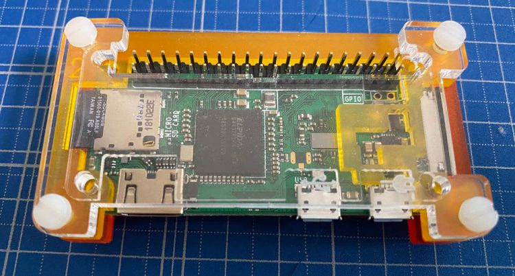
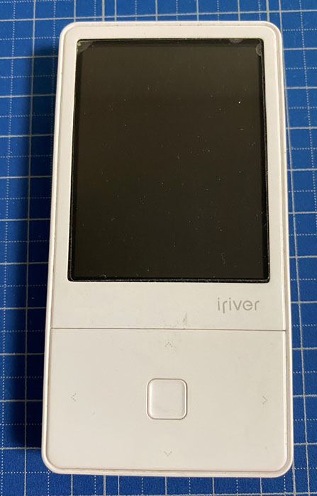
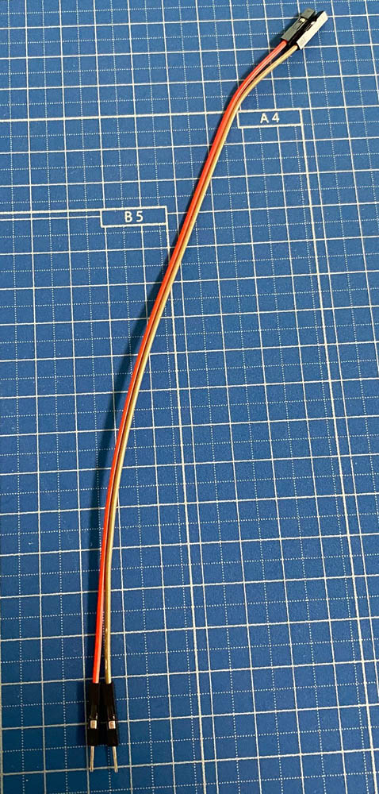
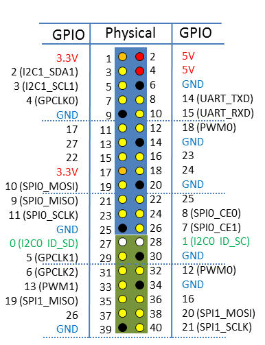
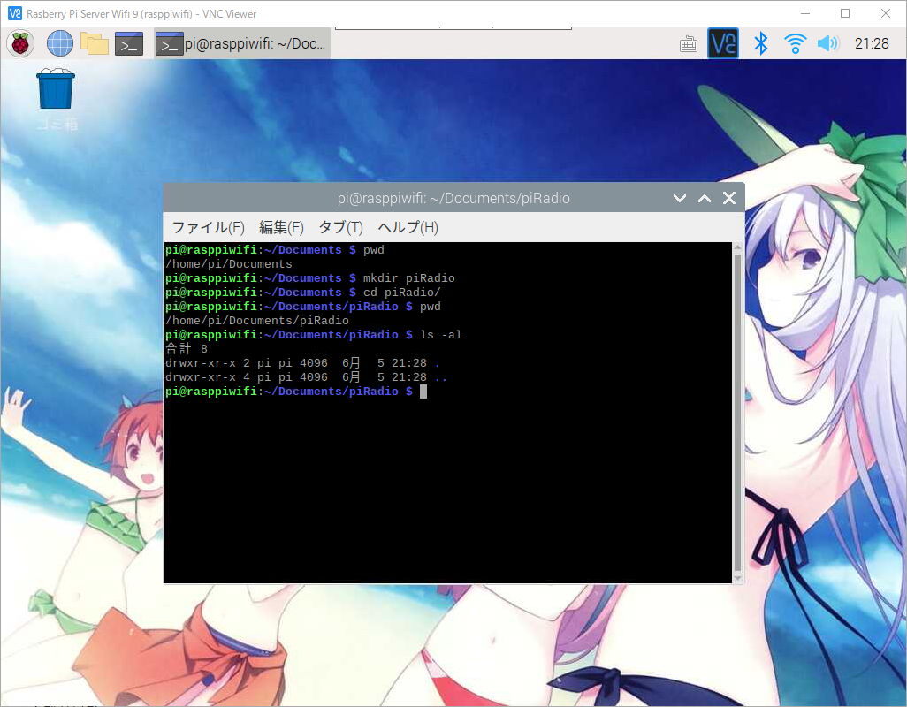
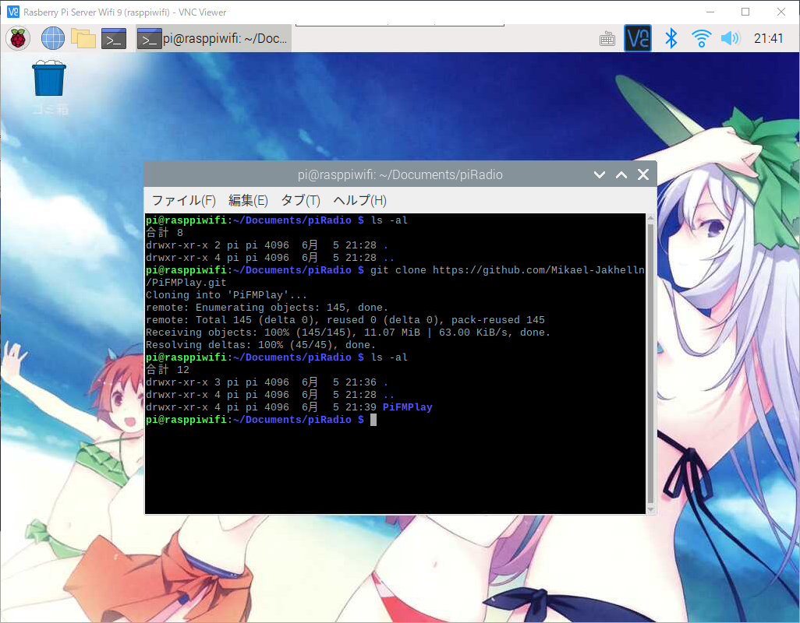
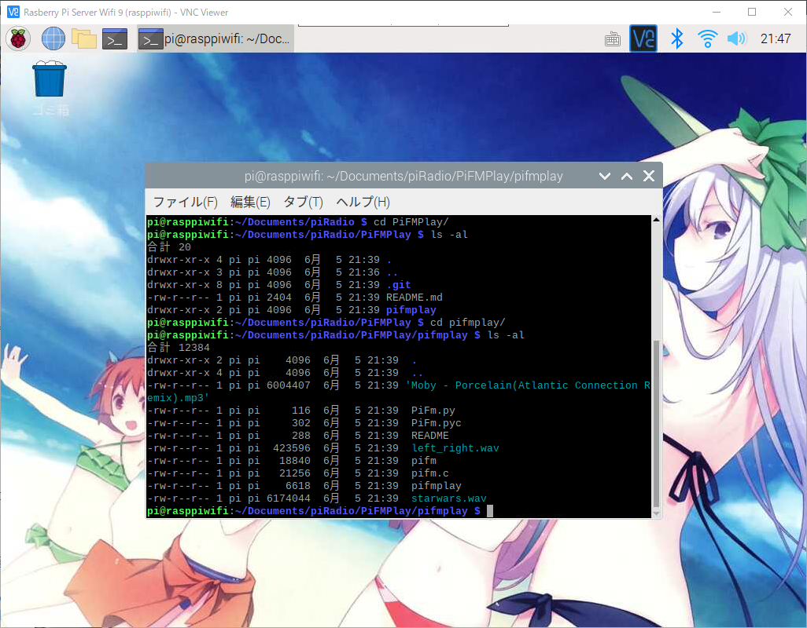
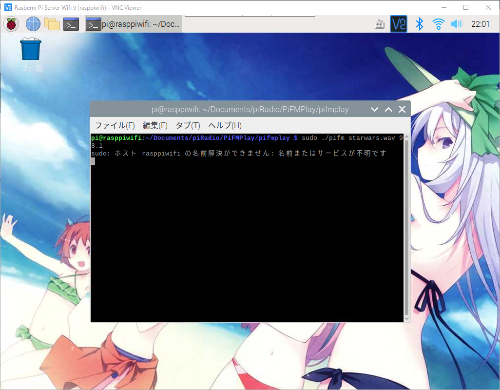

라즈베리파이에 GPIO, 파이썬으로 FM 라디오방송국 만들기
라즈베리파이에 GPIO, 파이썬을 이용해 FM 라디오 방송국 만들기
안녕하세요.
이번에 소개할 내용은 라즈베리파이에 GPIO, 파이썬을 이용해 FM Radio 방송국 만들기 입니다.
오픈소스를 이용해서 설치후 실행만 하시면 바로 라디오 송출이 가능하게 되는것으로
누구나 쉽고 빠르게 나만의 라디오 방송국을 구축하실수 있습니다.
나만의 방송국을 쉽게 만들수는 있지만 일단 준비물이 필요하겠습니다.
준비물은 간단하게
- 라즈베리파이 OS가 설치된 라즈베리파이
- 점퍼케이블 1줄
- 라디오
저는 라즈베리파이 제로를 이용해서 설명을 드리겠습니다.
라디오가 없으면 송출했는지 확인을 할수가 없습니다.



점퍼케이블을 아래의 표를 보시고 해당하는 위치에 연결을 해주시기 바랍니다.

| Pi GPIO Pin | Notes |
|---|---|
| 7 | GPCLK0 |
해당하시는 핀에 점퍼케이블을 연결 하셨으면 이제 라디오방송을 할수있는
오픈소스를 다운로드를 하셔야만 합니다.
라즈베리파이를 VNC로 접속하시고 터미널을 실행해 주시기 바랍니다.
오픈소스를 다운받아서 설치할 경로에 위치를 해주시기 바랍니다.
저의 경우 /home/pi/Document에 별도의 폴더를 만들어 관리하기 위해 폴더를 추가 하였습니다.
1 | # piRadio 이름으로 디렉토리 생성 |

오픈소스가 wav파일만 가능한 버전과 wav, mp3가 가능한 버전이 있습니다만
저는 wav, mp3 둘가 가능한 버전으로 소개를 해드리도록 하겠습니다.
오픈소스를 다운받기 위해 깃허브로 부터 소스를 클론하여 받도록 하겠습니다.
아래의 명령어를 터미널에 입력해 주세요.
1 | $ git clone https://github.com/Mikael-Jakhelln/PiFMPlay.git |

다운로드를 시작하시면 파일수가 많습니다만 조금만 기다리시면 다운로드가 되어있는것을 확인하실수 있습니다.
1 | # 아래의 명령어를 입력후 |

PiFMPlay 폴더로 이동을 하시면 아래와 같은 리스트가 나오게 됩니다.
1 | # .git 폴더, README.md |

폴더를 확인하시면 여러가지 샘플용 mp3, wav파일과 파이썬으로 개발된 오픈소스도 보입니다.

이제 실행하기전에 아래의 명령어로 실행파일에 권한을 부여를 해주시기 바랍니다.
1 | $ chmod +x pifm |
mp3파일을 재생하면 pifmplay의 경우 ffmpeg라이브러리가 필요로 하기에 우선 라이브러리도 설치 하겠습니다.
1 | $ sudo apt-get install ffmpeg sox libsox-fmt-allffmpeg sox libsox-fmt-all |
설치가 끝나셨으면 우선 starwars.wav파일을 송출해 보도록 하겠습니다.
1 | # 라디오 주파수는 가지고 계신 |

위와같이 실행을 하신후 라디오 주파수를 맞춰 주시면 라디오에서 스타워즈 노래가 나오는것을 확인하실수 있습니다.
그럼 계속해서 pifmplay를 이용한 mp3파일을 송출을 해보도록 하겠습니다.
1 | $ sudo ./pifmplay Porcelain.mp3 98.1 |
위와같이 출력후 라디오와 주파수를 맞춰주시면 mp3 음악이 라디오로 재생되는것을 확인하실수 있습니다.
이렇게해서 나만의 라디오 방송국을 만드는 방법을 알아보았습니다.
아래는 실제 라디오로 재생되는 음악파일 입니다.

주의사항
- 적합성 평가 : 전파법시행령 25조 국내에서 사용하기 위해서는 적합성 평가를 받은 제품이어야만 합니다.
- 출력 : 미래부에서는 ‘신고하지 아니하고 개설할 수 있는 무선국용 무선기기’의 규격을 정해놓고 있으며
- 오디오에 해당하는 ‘4. 음성 및 음향신호 전송용 무선기기’는 10mW 이하여야 합니다.
자세한 내용은 아래의 한국전파진흥협회를 참고해 주세요.